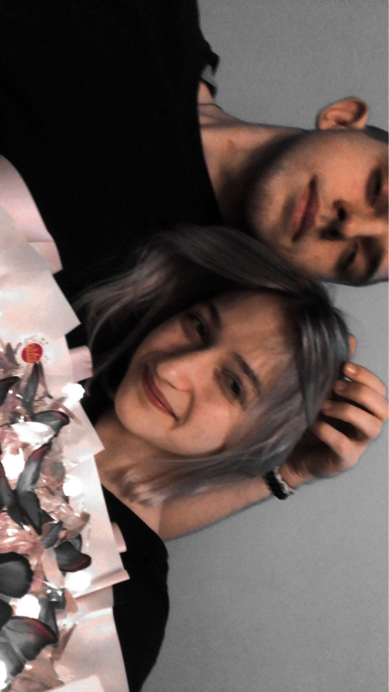
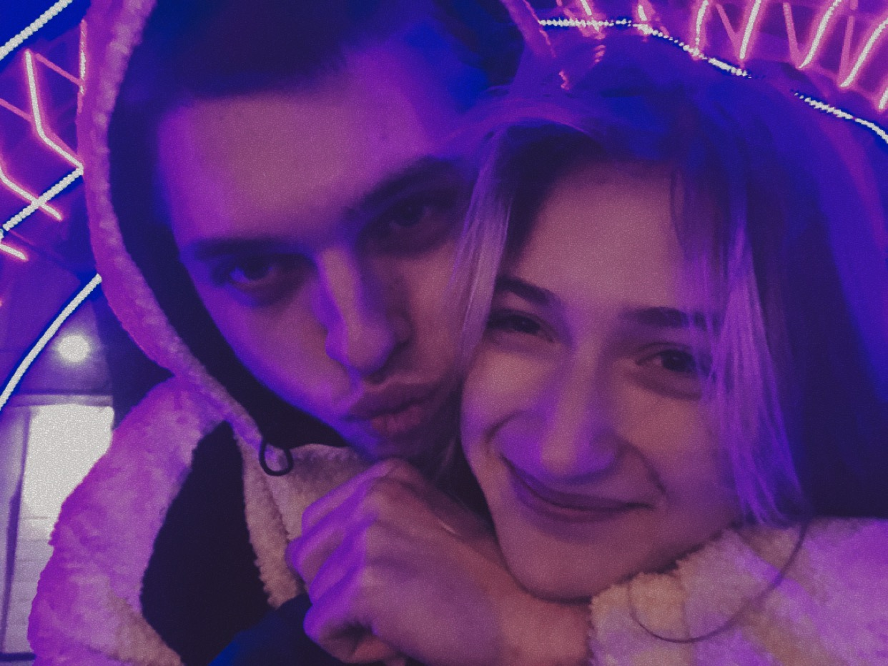
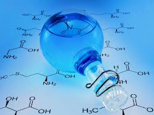
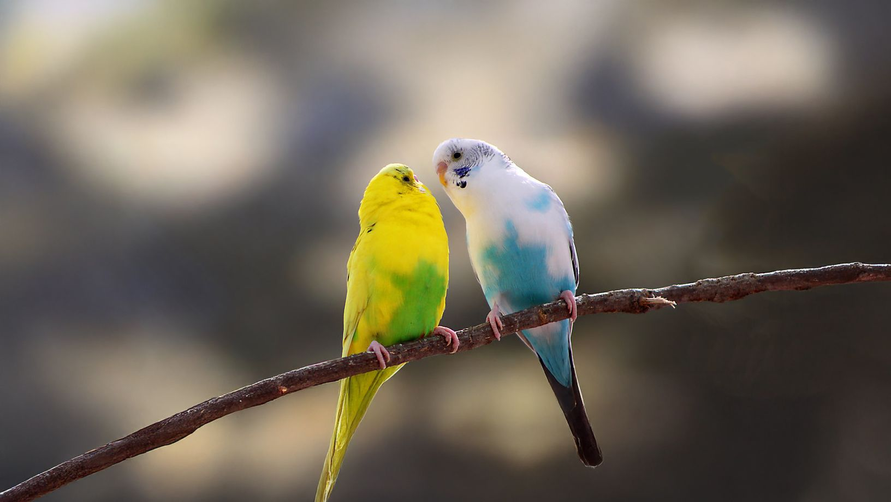
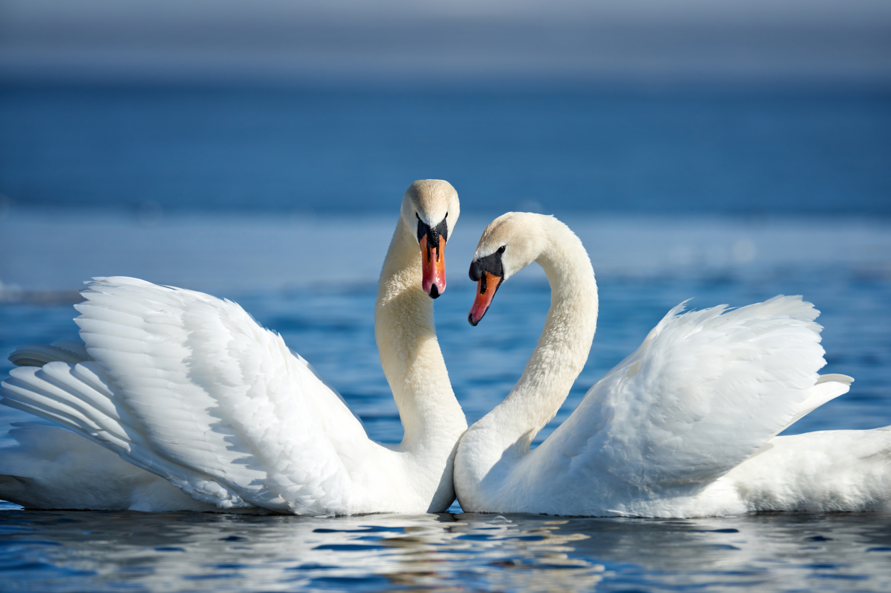
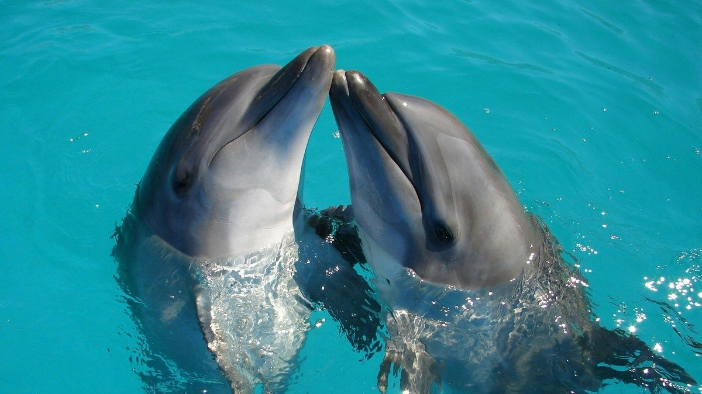
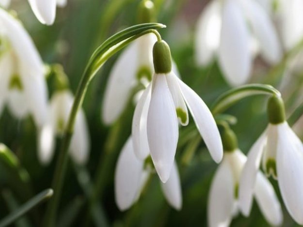
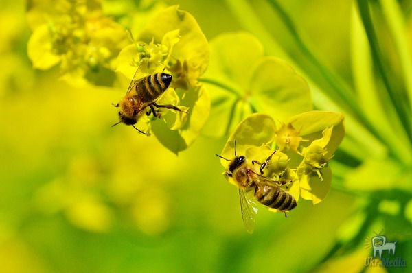
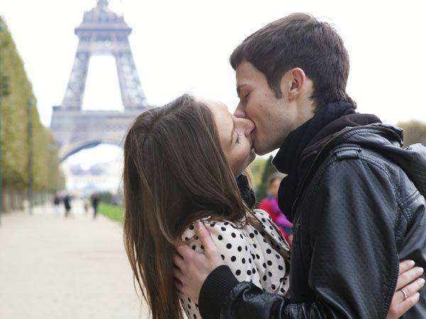

Вітаю тебе, моя кохана, з нашим святом)
Я довго думав, як тебе привітати, і згадав, що ти любиш цікаві подаруночки. Тож я вирішив зробити для тебе такий невеличкий сайт — лише для тебе! Тут ти побачиш цікаві факти про кохання, і, можливо, деякі з них ти побачиш і в нашому житті. Сподіваюся, тобі це сподобається, бо після цього я дуже хотів би провести час разом з тобою.
Я тебе дуже сильно кохаю. Залишилося зовсім трошки, і всі такі свята ми святкуватимемо разом, поруч. Я дуже чекаю того ранку, коли прокинуся і побачу тебе поруч. Я сумую за тобою. Сумую за обіймами і твоїми поцілунками. Я кохаю тебе.



Кохаю тебе, моя рідненька
Кохання справді повʼязане з хімією мозку
У закоханої людини активуються ділянки мозку, що відповідають за систему винагороди — дуже схоже на те, що відбувається під дією певних стимуляторів чи наркотиків, наприклад кокаїну. Це не жаргон, а результат томографічних досліджень.
Це пояснює:
- чому закоханість супроводжується ейфорією;
- байдужістю до зовнішніх сигналів;
- і навіть навʼязливими думками про партнера.
Коротко: закоханість — це не просто поетичний образ, а реальні зміни в мозку та нейромедіаторах.

У мене метелики від тебе)
Романтика у тваринному світі
Птахи-лірники — самці будують красиві «альтанки» з квітів, камінців і кольорових предметів, щоб сподобатися самці. Це не просто вибір партнера — це справжня декларація кохання, де кожна деталь відображає турботу і старання.
Лебеді утворюють пари на все життя. Вони плавають разом, чистять один одному пір’я і навіть сумують, якщо втрачають партнера. Романтика тут — у відданості й ніжності щодня.
Дельфіни «поцілунки» виглядають як легкі торкання дзьобів. Вони допомагають один одному піднятися на поверхню води, щоб подихати. Це турбота через дотик, що нагадує людську ніжність.



Вірю в те, що ми лебеді
Романтика у рослин і комах
Квіткова мова
Деякі рослини ніби «закохуються» у комах, виробляючи аромати, кольори та форми, що приваблюють саме потрібних запилювачів. Це майже поетичний ритуал взаємної уваги: рослина «пише листа» ароматом, а комаха «відповідає» візитом.
Синхронні ритуали
Деякі види бджіл і метеликів обирають партнера через танець або рухи крил, синхронізуючи ритм. Вони ніби танцюють разом, щоб показати симпатію і готовність до спільного життя.


Ти моя квітка, а я твоя бджілка
Людські традиції та мистецтво
Японське сватання «Omiai»
Жест: вручення символічного подарунка, посмішка і легкий поклін.
Як описати: «Він простягає маленьку коробочку, всередині — знак турботи та уваги, і їхні погляди зустрічаються у тихій згоді сердець».
Французький поцілунок
Жест: поєднання губ і дотиків рук.
Як описати: «Вуста зустрічаються, пальці ніжно ковзають по плечу, а світ навколо мовби зупиняється».
